Ceviche
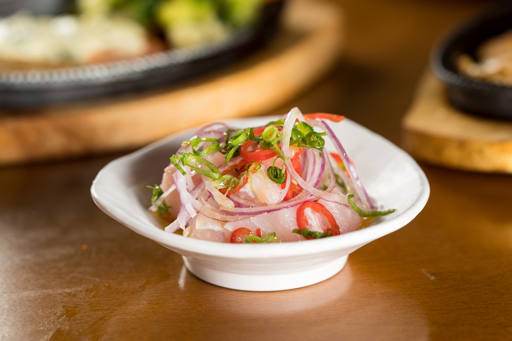
Prato composto por peixe fibroso marinado com suco de limão, mais cebola roxa, pimenta dedo de moça e molho especial.
Valor: R$ 35,00

Prato composto por peixe fibroso marinado com suco de limão, mais cebola roxa, pimenta dedo de moça e molho especial.
Valor: R$ 35,00
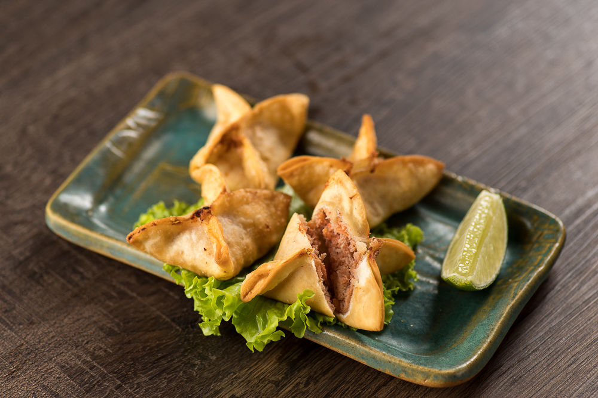
Deguste uma massa fininha frita recheada com salmão e repolho
Valor: R$ 25,00
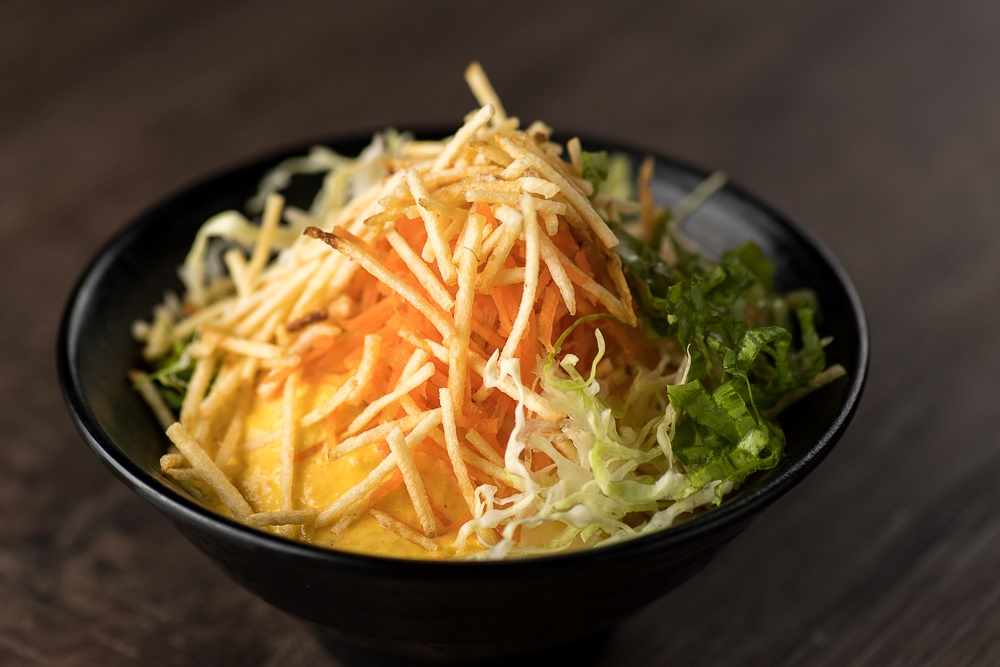
Para quem gosta das saladas para iniciar a refeição, o Djapa prepara um mix de folhas, com cenoura e molho à base de maçã. O prato é finalizado com batata palha.
Valor: R$ 20,00
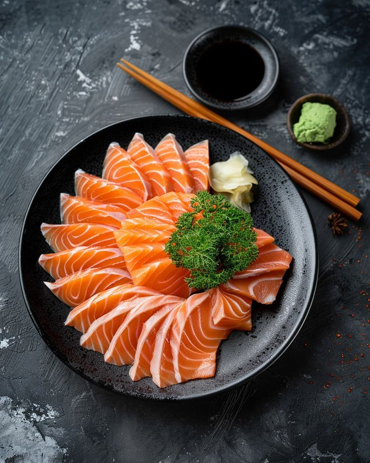
O Sashimi de Salmão é um prato tradicional da culinária japonesa, composto por fatias finas de salmão cru, servido com molho shoyu e wasabi.
Valor: R$ 40,00
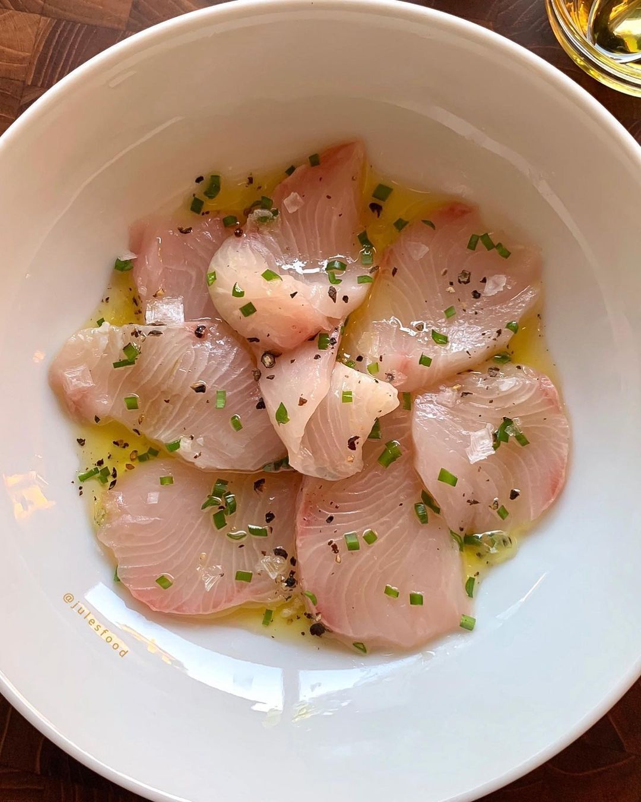
O Yellow Tail é um peixe de água doce, conhecido por sua textura suave e sabor delicado. É frequentemente servido como sashimi ou em pratos combinados.
Valor: R$ 45,00
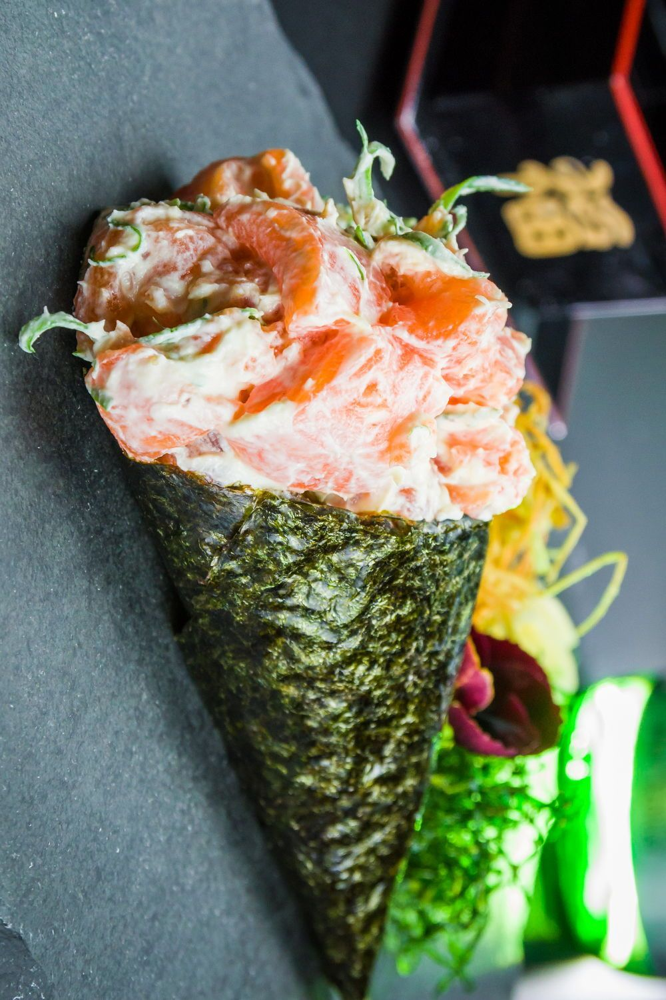
O Temaki Filadelfia é um cone de alga nori recheado com arroz, salmão fresco, pepino e cebolinha. É uma opção prática e deliciosa para quem gosta de sushi.
Valor: R$ 30,00
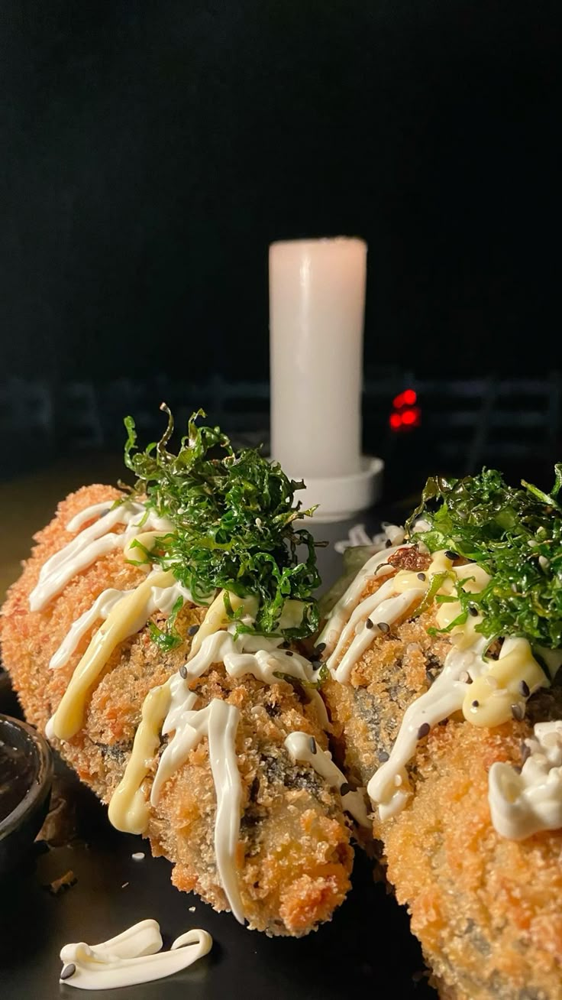
O Temaki Frito é uma variação do temaki tradicional, onde o alga nori é frita, criando uma textura crocante e sabor intenso. Recheado com arroz, salmão fresco, pepino e cebolinha.
Valor: R$ 35,00
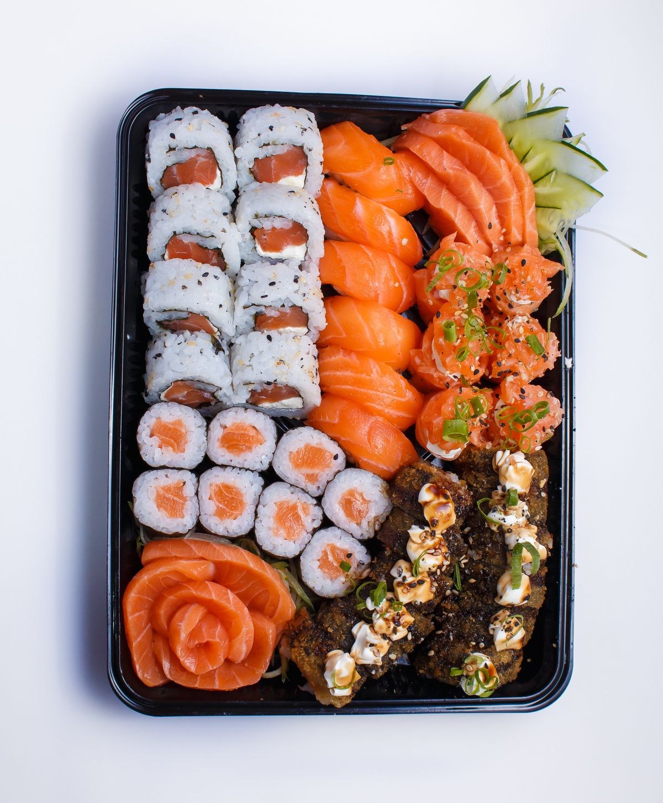
O Combinado 1 é uma seleção de sushis e sashimis variados, incluindo salmão, atum e outros peixes frescos. Ideal para compartilhar ou para quem deseja experimentar diferentes sabores.
Valor: R$ 130,00
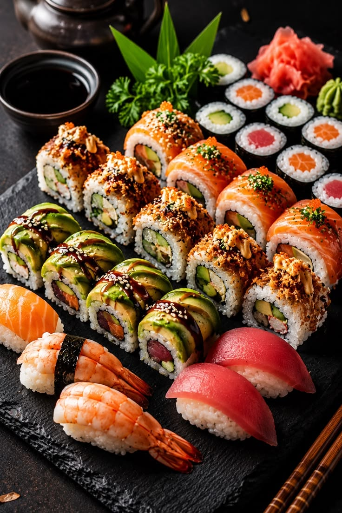
O Combinado 2 é uma opção mais completa, com uma variedade maior de sushis, sashimis e temakis. Perfeito para quem deseja uma experiência gastronômica completa.
Valor: R$ 180,00
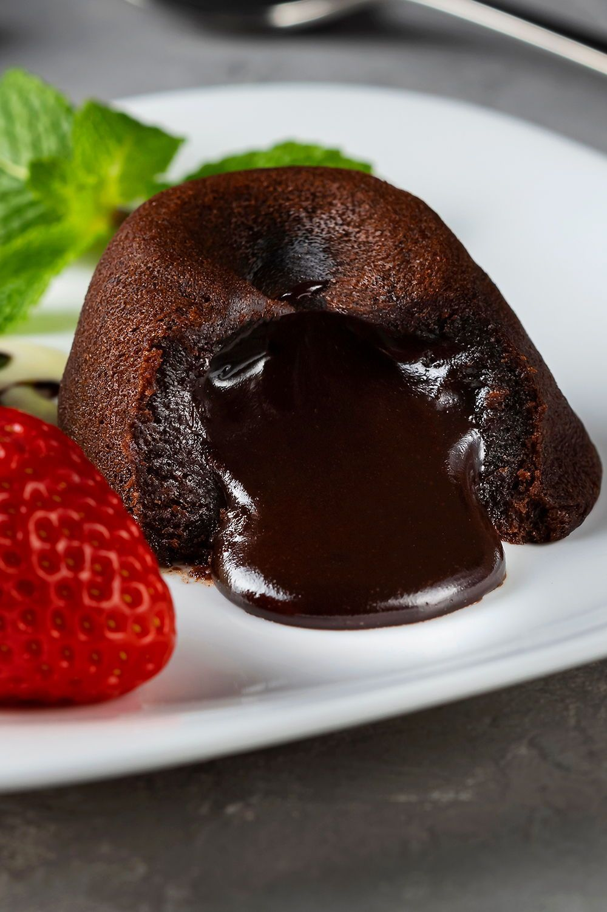
O Petit Gateau é uma sobremesa clássica, composta por um bolinho de chocolate com recheio cremoso, servido com sorvete de baunilha. Uma combinação perfeita de quente e frio.
Valor: R$ 40,00
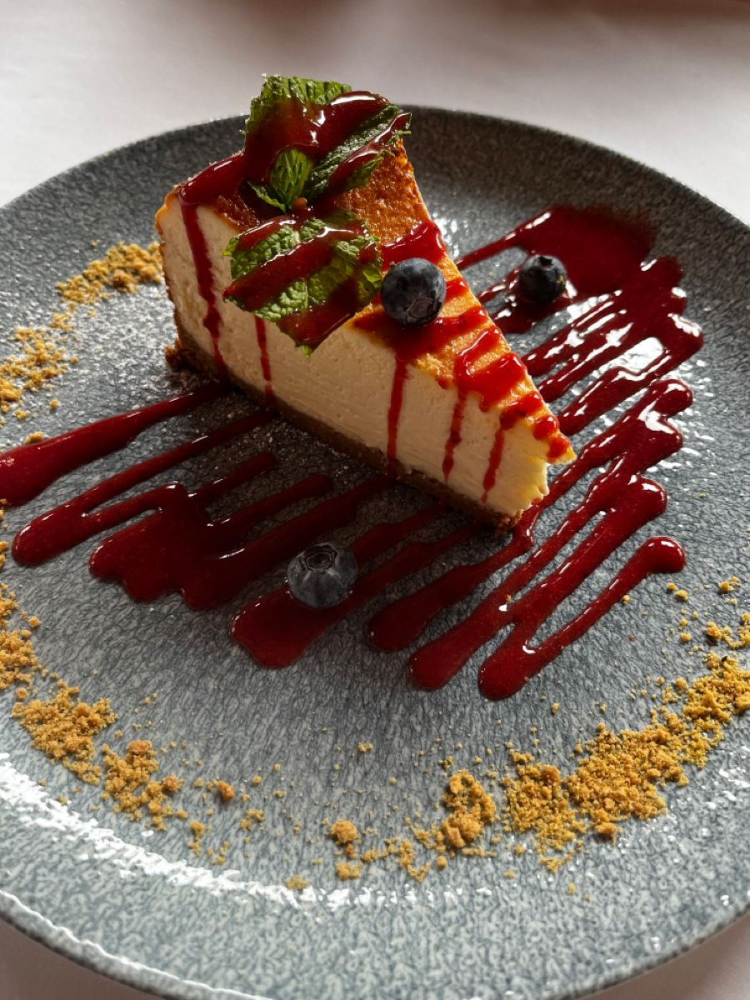
O Cheesecake de Frutas Vermelhas é uma sobremesa leve e refrescante, com base de biscoito, recheio cremoso de cream cheese e cobertura de frutas vermelhas frescas.
Valor: R$ 35,00
| Dias da Semana | Valor |
|---|---|
| Quarta-feira | R$ 50,00 |
| Quinta-feira | R$ 55,00 |
| Sexta-feira | R$ 60,00 |
| Sábado | R$ 65,00 |
| Domingo | R$ 70,00 |